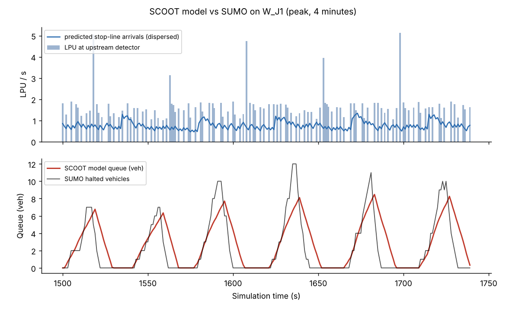
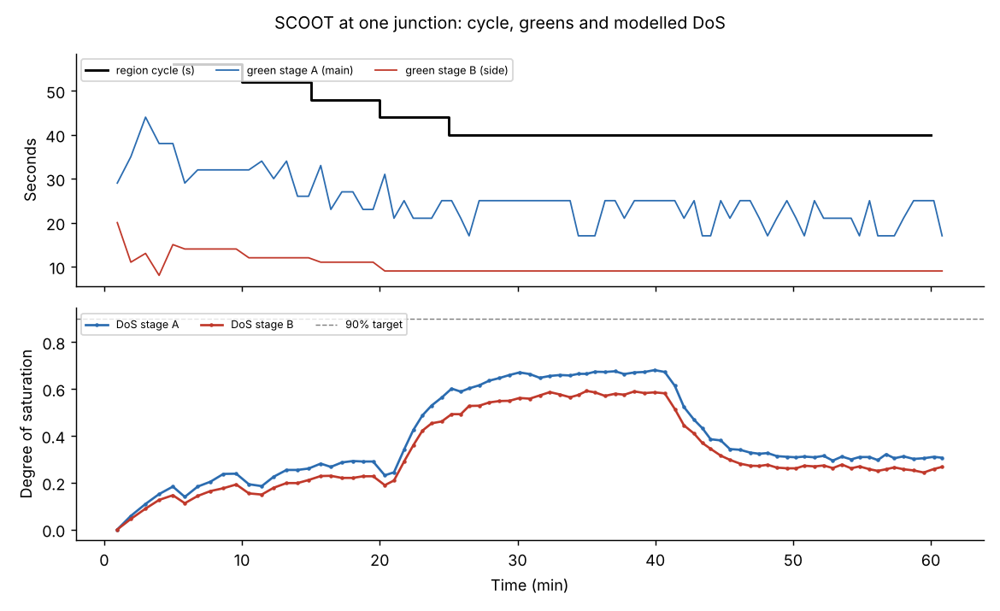

How SCOOT sees the street
SCOOT keeps a live model of every link. It counts traffic far upstream, predicts when it will reach the stop line, and works out the queue before it forms. This level builds that model piece by piece.
What SCOOT is
SCOOT, the Split Cycle Offset Optimisation Technique, was developed by the UK Transport and Road Research Laboratory (now TRL) for the Department of Transport, first released around 1980. It is a centralised, model-based adaptive system: a computer in the traffic control centre runs a traffic model of every link, second by second, and adjusts the three timing variables in its name by small, frequent amounts.
- Split
- How the cycle is shared between stages. Adjusted a few seconds before every stage change.
- Cycle
- The common cycle time of a region. Adjusted every 5 minutes (2.5 when traffic is rising).
- Offset
- When each junction's cycle runs relative to its neighbours. Adjusted once per cycle.
Its central idea is the elastic plan: rather than switching between stored plans, SCOOT nudges the current plan a few seconds at a time, so timings track demand smoothly and no single bad decision matters much. It has been developed through many versions; SCOOT 7 (2020) added cooperative-vehicle data, pedestrian SCOOT and a cloud-first design.
How it is built
SCOOT describes the network with four words. A region is a group of junctions sharing one cycle time. Each junction or crossing in it is a node. Each approach to a stop line is a link, with its own detector and its own model. Each set of movements that runs together is a stage.
The SCOOT loop
What happens every second, every stage change, every cycle and every 5 minutesDetectors and link profile units
SCOOT's detectors sit near the upstream end of each link, ideally just downstream of the previous junction. That position gives the model advance warning: vehicles are counted 10 to 20 seconds before they reach the stop line. Each detector is sampled four times a second and SCOOT converts the result into link profile units (LPUs), a hybrid of flow and occupancy. Because a long vehicle occupies the loop longer, it produces more LPUs, just as it uses more green.
LPU calculator
Why long vehicles count moreFrom detector to stop line: profiles and dispersion
Every second SCOOT adds the measured LPUs into a cyclic flow profile: a histogram of flow across one cycle, smoothed over several cycles so random fluctuations do not dominate. The profile is shifted by the cruise time (detector to stop line at cruising speed) and spread out, because platoons disperse as faster and slower drivers separate. SCOOT handles dispersion as TRANSYT does, with Robertson's model.
Platoon dispersion
A platoon released by the upstream signal, seen at the detector and at the stop lineThe queue model and degree of saturation
With arrivals predicted at the stop line, the queue follows from simple rules. Arrivals during red join the back of the queue. During effective green the queue discharges at the saturation occupancy (SATO), in LPUs per second. Effective green starts a start lag after the signal turns green and ends an end lag after green ends. Once the queue has cleared, arrivals pass without stopping.
From the modelled queue SCOOT reads delay (the area under the queue), stops (arrivals that meet a queue or a red) and the degree of saturation: demand in the cycle, plus any queue left over, divided by what effective green could discharge. SCOOT aims to keep every stop line at or below about 90%.
One cycle on one link
Drag the green window and the platoon; watch the queue the model predictsValidation: making the model match the street
The model is only as good as its parameters. When a link is commissioned, an engineer stands at the stop line and validates it: they compare what SCOOT shows with what they see and set the journey (cruise) time, saturation occupancy, start lag, end lag and the maximum queue clear time. Poor validation is the most common reason SCOOT underperforms.
Validate this link
The street queue clears at the time marked; tune the model until its queue clears at the same momentSCOOT live, against fixed time and actuation
One junction, three controllers, the same arrivals. The box far up each approach is the SCOOT detector; vehicles cross it, travel to the stop line and join the queue. The amber bar beside each queue is SCOOT's model of that queue; it never sees the real one. Fixed runs an 80 s plan. Actuated ends greens when the stop-line loop goes quiet. SCOOT runs the split optimiser before every stage change and the cycle optimiser every 5 simulated minutes.
Live junction
Split decisions appear here.
Race the controllers
One simulated hour each, identical random arrivals, peak in the middleAt a single isolated junction, good vehicle actuation is hard to beat: it reacts to each gap. SCOOT's strength is coordinating many junctions through offsets and a common cycle, which the Advanced level shows on a four-junction region.
| Controller | Mean delay (s/veh) | Mean queue (veh) | Vehicles served | Final cycle (s) |
|---|---|---|---|---|
| Press "Run the race". | ||||
Where fixed-time plans come from
Before SCOOT, coordinated networks ran fixed plans designed offline, usually with TRANSYT, which uses the same cyclic-profile and dispersion model. SCOOT is often described as an on-line version of TRANSYT. For an isolated junction the classic fixed-cycle design is Webster's formula.
Webster calculator
Run it in SUMO
The same model runs inside Eclipse SUMO with real lane changing, mixed vehicles and stochastic drivers. See the SUMO code page for installation.
Lab F1: LPUs, profiles and the queue model against SUMO
python foundation/01_lpu_profiles_queue.py --link W_J1Logs, every second, the LPUs at the upstream detector, the predicted stop-line arrivals, SCOOT's model queue and the queue SUMO actually built.

Lab F2: validate the model
python foundation/02_validate_model.pyOverloads the junction and measures what an engineer validates on site. Our run gives 1.95 LPU per vehicle, cruise speed 13.5 m/s, SATO 0.67 LPU/s per lane on the main road and 0.89 on the side road, start lag 3 s and end lag 4 s. These are the controller's defaults.
Lab F3: fixed vs actuated vs SCOOT
python foundation/03_fixed_vs_scoot.py # add --gui to watch SCOOT in sumo-gui
Check your understanding
Ready? Continue to Advanced, where the three optimisers coordinate a whole region.